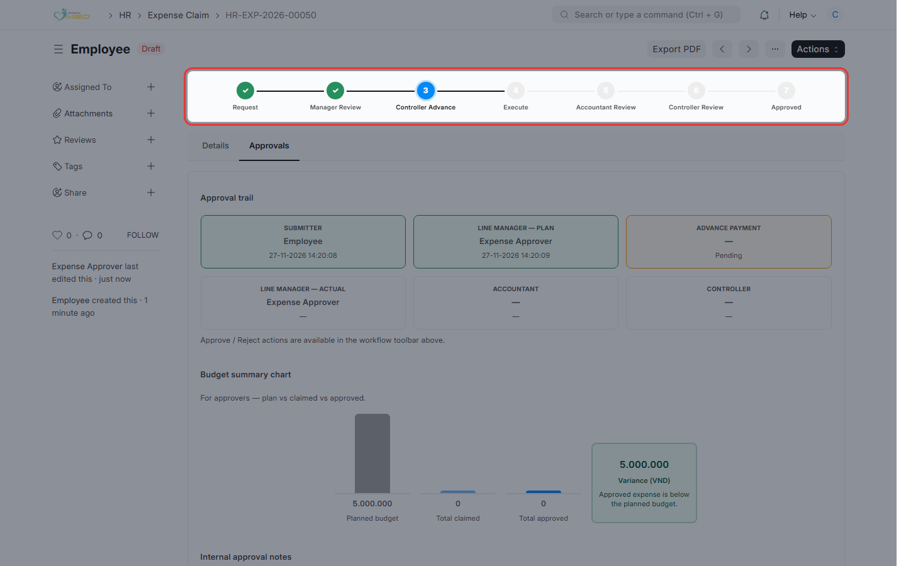
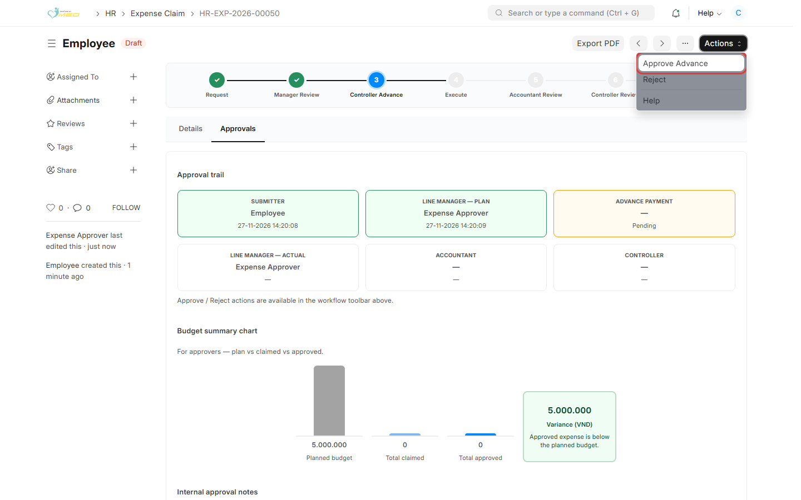
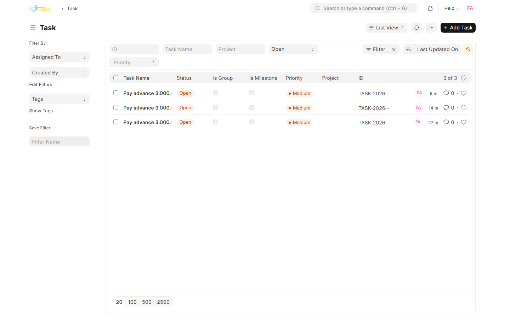
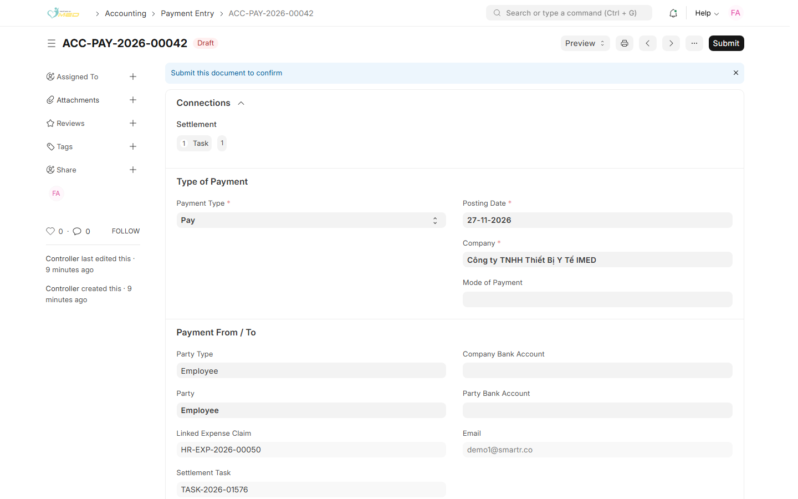

Luồng
Khi nhân viên chọn Yêu cầu tạm ứng trên tab Kế hoạch và gửi kế hoạch (Submit Plan), phiếu đi qua người duyệt kế hoạch rồi tới Kiểm Soát Trưởng
- Nhân viên — gửi kế hoạch có tạm ứng.
- Người duyệt — Approve Plan trên tab Đồng ý.
- Kiểm Soát Trưởng — phiếu đang chờ duyệt tạm ứng; trên thanh quy trình bước Kiểm soát viên duyệt tạm ứng đang sáng. Chọn Approve Advance Plan trong Các thao tác.
- Hệ thống — tạo Đề nghị tạm ứng liên kết, tạo công việc (Task) chi tạm ứng và chứng từ chi bản nháp, giao cho Chuyên viên tài chính.
- Chuyên viên tài chính — kiểm tra chứng từ chi, điền ngân hàng / hình thức thanh toán, rồi Submit (nộp).
- Nhân viên thấy bước Triển Khai sáng và nhập Chi tiết chi phí thực tế.
Quyết toán thu/chi sau duyệt cuối: quyết toán sau duyệt.
Trước khi chi
Người duyệt kế hoạch
Phiếu đang chờ người duyệt xét kế hoạch (thanh quy trình ở bước Trưởng bộ phận duyệt). Mở Các thao tác → Approve Plan. Nếu có tạm ứng, sau khi đồng ý phiếu chuyển sang Kiểm Soát Trưởng, không sang Kiểm Toán. Chi tiết: hướng dẫn người duyệt.
Thanh quy trình
Sau khi người duyệt kế hoạch đồng ý, bước Kiểm soát viên duyệt tạm ứng sáng trước bước Triển Khai.

Kiểm Soát Trưởng duyệt tạm ứng
Đăng nhập tài khoản Kiểm Soát Trưởng. Vào nhân sự → Đề nghị thanh toán. Mở phiếu có bước Kiểm soát viên duyệt tạm ứng đang chờ.
- Xem tab tóm tắt Kiểm Soát Trưởng — kế hoạch, số tạm ứng, liên kết đề nghị tạm ứng.
- Mở Các thao tác → Approve Advance Plan (một số màn tiếng Anh ghi Approve Advance).
- Reject — trả phiếu, ghi lý do; nhân viên sửa kế hoạch và gửi lại.


Chuyên viên tài chính — nộp chứng từ chi
Đăng nhập bằng tài khoản Chuyên viên tài chính (trên môi trường demo: vai Financial Analyst). Sau khi Kiểm Soát Trưởng duyệt tạm ứng, bạn được gán công việc chi tạm ứng kèm chứng từ chi bản nháp.
- Mở danh sách Công việc (Task) — lọc việc còn mở — hoặc mở đề nghị thanh toán liên quan, tab Việc, và đọc mã chứng từ chi trong mô tả.
- Mở chứng từ chi từ liên kết trên công việc, hoặc Kế toán → Payment Entry (Chứng từ chi) và mở đúng mã.
- Kiểm tra loại chi cho nhân viên, số tiền, đề nghị tạm ứng liên kết, hình thức thanh toán và tài khoản ngân hàng.
- Nhấn Submit để nộp chứng từ.


Sau khi chi
- Đề nghị tạm ứng chuyển sang đã chi; số đã chi khớp chứng từ.
- Bảng tạm ứng trên phiếu cập nhật; nhân viên thấy bước Triển Khai và nhập chi tiết chi phí thực tế (hướng dẫn nhân viên).
Phiên bản cũ (không còn áp dụng)
Trước đây Kiểm Toán tự lập chứng từ chi trên đề nghị tạm ứng, duyệt tạm ứng và đánh dấu đã chi trên phiếu đề nghị thanh toán. Luồng hiện tại: người duyệt kế hoạch → Kiểm Soát Trưởng duyệt tạm ứng → Chuyên viên tài chính chi.